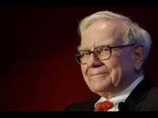
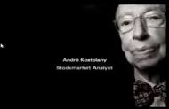
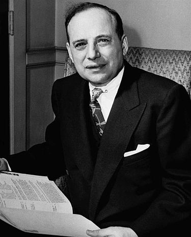
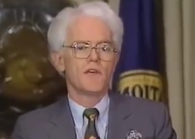

華倫·巴菲特
華倫·愛德華·巴菲特（英語：Warren Edward Buffett，1930年8月30日－），出生於美國內布拉斯加州的奧馬哈，美國投資家、企業家、及慈善家，世界上最成功的投資者。巴菲特是波克夏·海瑟威公司的最大股東，董事長及執行長。在2008年全球富豪排名第一，2017年第2。根據彭博數據顯示，巴菲特個人持有29.5萬股波克夏A股、7.9萬股波克夏B股，
巴菲特常被稱為「奧馬哈的神諭」（The Oracle of Omaha），並以長期的價值投資與簡樸生活聞名。他也是著名的慈善家，並承諾捐出99%的財富，主要交由比爾及梅琳達·蓋茲基金會會來運用。巴菲特此一大手筆的慈善捐贈，創下了美國有史以來的紀錄。
2012年4月17日，巴菲特發表聲明稱自己已被診斷患前列腺癌[3]，同年9月完成治療。
由於巴菲特投資股票的眼光獨到又奇特，信奉所謂「價值投資法」，投資哪種產業的股票該產業就會走紅。因此巴菲特被眾多投資人尊稱為「股神」。然而其投資也並非穩賺，例如2010年代後諸多投資虧損，投資IBM更曾經大賠34%以上出場，[4]其身邊眾多智囊團都還會造成大虧，因此也開始有人質疑價值投資法只適用於人類發展較單純的年代，在越來越複雜分工化和全球化的時代逐漸不適用。
家族背景
先祖席德尼·巴菲特，於1869年從紐約搬到奧馬哈，在當地開了一家雜貨店。
他的祖父在奧馬哈經營一家雜貨店。
他的父親是霍華·巴菲特，共和黨員，曾在內布拉斯加大學所辦的報紙擔任編輯，婚後從事過證券經紀人的工作，曾任1942至1948以及1950至1952年間，兩任的美國國會眾議員。對金錢觀念保守，有一回他將加薪部份的2,500美元，主動退還給美國財政部，巴菲特非常敬愛他的父親，以Pop稱呼他，他的父親則稱他為火球。1964年死於癌症。
他的母親是萊拉·巴菲特，1924年與霍華·巴菲特結婚，於1996年8月30日逝世，當天是巴菲特66歲生日。
他的姑姑愛麗絲，終身未嫁，多年來一直是高中老師，曾任教於奧瑪哈的班森高中，巴菲特透過巴菲特基金會，每年頒發獎金給十五位老師，以紀念愛麗絲。
巴菲特另外還有兩個姊妹，桃莉絲（Doris）和柏蒂（Bertie）。
早年
巴菲特出生於內布拉斯加州的奧馬哈市區一家老舊的醫院，他生在一個富裕的家庭，父親是兩任美國國會議員與成功的商人。巴菲特有兩個姐妹，桃莉絲（Doris）和柏蒂（Bertie）。祖父則在奧馬哈經營一家雜貨店。（現任的波克夏·海瑟威的副董事長——查理·孟格（Charlie Munger），年輕時也曾在巴菲特祖父在奧馬哈的這家雜貨店工作過。但兩人一直到成年之後，才首次相遇認識。)
五歲時，就在祖父經營的雜貨店擺地攤兜售口香糖。稍大以後，他和朋友到球場撿拾打過的高爾夫球，然後轉手倒賣回球場或客人。上中學時，除利用課餘做報童外，他還與夥伴合夥將彈子球遊戲機出租給理髮店老闆們，掙取外快。
11歲的巴菲特，開始在父親的證券經紀商工作，同年也是他頭一次買進股票。他以每股38美元，買進了Cities Services的優先股，但在股價達到40美元即予以賣出，不料隨後股價一路上揚，幾年後竟站上200美元，這讓他明瞭投資績優企業、並長期持有股權的重要性。在父親的推薦下，14歲的他以兩份送報工資所存下來的1200美元，買下了40英畝的土地，並且把這些土地轉租給佃農。富裕的家庭與早期對投資的接觸對巴菲特有很大的幫助，他在大學畢業時已有近10000美元（2016年的100000美元）的積蓄。
1947年，巴菲特進入賓夕法尼亞大學的華頓商學院，後來轉到內布拉斯加大學林肯分校（University of Nebraska - Lincoln）並在19歲取得商業管理學士學位。在校期間，他是阿爾法·西格瑪·斐兄弟會（Alpha Sigma Phi Fraternity）的成員。在閱讀班傑明·葛拉漢（Benjamin Graham）的名著《智慧型投資人》（The Intelligent Investor）後，也奠定了華倫·巴菲特在投資方面的興趣與基礎。
之後，在被哈佛商學院拒絕後，巴菲特得知班傑明·葛拉漢在哥倫比亞商學院（Columbia Business School）任教，於是進入該校就讀，並在1951年取得經濟學碩士學位。一些將在未來嶄露頭角的價值投資者，如華特·許羅斯（Walter Schloss)及厄文·卡漢（Irving Kahn），也是同期葛拉漢的學生。而另外一位對巴菲特投資哲學產生重大影響的人，是知名的投資家兼作家－菲利普·費雪（Philip Fisher）。在證券分析這堂課中，葛拉漢給了巴菲特A+，這在葛拉漢的學生中是絕無僅有的。
富豪生涯
1962年1月，巴菲特有限合夥事業市值達到$7,178,500元，其中$1,025,000元屬於巴菲特。
巴菲特有限合夥事業在1962年，開始購入波克夏·海瑟威公司的股權。波克夏是一家大型的紡織公司，由於產業日益沒落，使股票的市場交易價格，低於該公司的營運資本（working capital），華倫·巴菲特最後解散了合夥事業，全心投入波克夏的經營。由於紡織產業的一蹶不振，使現任波克夏副總裁的查理·孟格，視此收購為一大敗筆。巴菲特也自認：「這是留名青史的愚蠢大錯。」並認為若當時將所有資金直接購入保險事業，現在的價值會是兩倍以上。然而，在巴菲特善加運用該公司多餘現金，用以收購私人企業、及買進公開上市公司股權下，波克夏成為全球最大的控股公司之一。華倫·巴菲特的策略核心是保險公司，主要著眼於其龐大的現金部位，即「浮存金（float）」，這是保險公司為支應未來理賠所需、必須提存的預備金。本質上，這並不是保險業者所擁有，但卻可加以運用，以獲取投資收益的資金。
受到好友暨事業夥伴孟格的影響，這時期巴菲特的投資風格，跳脫了原本恪守的葛拉漢原則（完全專注於價格低於價值），開始專注在一些具有持久性競爭優勢的優質企業上。雖然過去的作法早期得到很好的成效，但隨著資金越來越多，巴菲特發現這做法無法用於於巨大的資金與長久的經營。這時，孟格的建議幫助了他。巴菲特回憶：「查理給我的建議很簡單：忘記你過去用很好的價格買進普通的企業的作法，而該用普通的價格買進很好的企業。」由於過去的成功，剛開始巴菲特並不想採納這作法。但在孟格不斷的提醒與說服之下，這作法終於成為波克夏日後最重要的投資哲學。
巴菲特將這些優勢，比喻成「護城河」（一定程度的壟斷），使企業得以將競爭對手，隔絕在安全距離之外。相較於「商品（commodity）」類型的公司，由於銷售的產品欠缺差異性，因此面臨強大的競爭壓力。具有寬廣護城河的企業中，可口可樂可說是最典型的範例。因為即使口味類似，消費者還是願意支付較高的價錢，來購買可口可樂，也不願嘗試其他較一般的飲料。投資在這類寬廣護城河的企業，成為波克夏·海瑟威最令人矚目的事蹟，特別是傾向買下整間企業，而非透過公開市場交易。有鑒於此，波克夏目前持有為數眾多、在不同產業中稱霸的事業群，其中有些是專注於個別的利基市場，否則就必然具備某種可在競爭對手中脫穎而出的特性。

安德烈·科斯托蘭尼
安德烈·科斯托蘭尼（André Kostolany，1906年2月9日－1999年9月14日），大部分時間在德國和法國度過，有德國證券界教父之稱，他在德國投資界的地位，有如美國的沃倫·巴菲特（Warren Buffett），是市場上的無冕王。他的理論被視為權威，當他說話時，德國的投資人、專家、媒體記者都安靜下來傾聽他的話語。
生平
科斯托蘭尼出生於匈牙利布達佩斯的一個改信天主教的猶太家庭。
他的投資生涯自從十幾歲接觸股票後開始，安德烈·科斯托蘭尼就像染上毒癮一樣，從此深深的為投機的刺激和風險所著迷，有將近八十年的時間他都是在與各樣的股票、債券、貨幣、期貨等商品打交道，而且樂此不疲，他也一直以投機者自許。雖然他在35歲就賺得了足以養老的金錢，不過這不代表他的投資都是一帆風順的，相反的還曾經破產過兩次，他本身在自著中也承認本身在一百次投機當中只要有51次成功就算僥倖了，但也因為有了許多經驗使得他擁有敏銳的觀察力和過人的判斷力並不斷累積財富，更使曾在第二次世界大戰中失去所有家當的雙親，在瑞士安享晚年。
著書
儘管他早年就賺得大筆財富，但在50歲時還是耐不住無聊，開始著書創作將他所知道的一切分享給讀者，60年代以來，三十年筆耕不輟：《這就是證券市場》（Das ist die Börse.）[1]一書被翻譯成七國語言，包括日文在內，還拍成了電影，從此躋身暢銷作家之列，在他一生當中共寫了13本有關投資、證券、貨幣、財富、證券心理學的書，書中寫了他在股市上的巨大成功也寫了他的巨大失敗，但都是要實實在在的告訴讀者自己所走過的旅程。另外他也在德國經濟雜誌《資本》擁有自己的專欄，供稿長達二十五年，只缺稿兩次。科斯托蘭尼同時也是德國、奧地利多所大學的客座教授，並在歐洲各地咖啡館開設講座，跟學生、有錢人、乞丐、小偷等各式各樣的人大談投資學，告訴他們獨立思考的重要性。

班傑明·葛拉漢
班傑明·葛拉漢（Benjamin Graham，1894年5月8日－1976年9月21日）畢業於美國哥倫比亞大學。是一名出生在英國的美國投資人、經濟學家以及教授。被稱為「價值投資之父」。班傑明・葛拉漢的投資理念十分強調投資者的個人心理,以及債務情況，強調投資者須在安全情況範圍內購買。著名美國投資者沃倫・巴菲特在紀錄片《Becoming Warren Buffet》在片中說明自己入讀哥倫比亞大學其中一個原因是因為班傑明在哥倫比亞大學當教授故而申請入讀哥倫比亞大學。
經歷
班傑明·葛拉漢1894年5月9日出生於英國倫敦，嬰兒時期隨父母移居紐約。
1914年葛拉漢從哥倫比亞大學畢業，同年夏天，他來到紐伯格·亨德森·勞伯公司做了一名信息員，不久被提升為證券分析師。
1920年葛拉漢成為紐伯格·亨德森·勞伯公司的合伙人。
1923年年初，葛拉漢離開了紐伯格·亨德森·勞伯公司。他成立了格蘭赫私人基金，資金規模為50萬美元。
1926年，與傑羅姆·紐曼（Newman）合作創立葛拉漢·紐曼公司
1928年起在哥倫比亞大學執教。
在1929年9月5日開始的華爾街崩盤中，葛拉漢幾乎到了破產的邊緣。
1934年年底出版《有價證券分析》（Security Analysis）。
1936年出版《財務報表解讀》。
1949年出版《智慧型股票投資人》（The Intelligent Investor）。
1956年退休。葛拉漢·紐曼公司解散。
1976年病逝於法國艾克斯。

彼得·林區
彼得·林區，是一位股票投資家和證券投資基金經理。目前他是富達公司的副主席，富達基金託管人董事會成員之一，現居波士頓。 在彼得·林區出任麥哲倫基金的基金經理人的13年間，麥哲倫基金管理的資產由2,000萬美元成長至140億美元，基金投資人超過100萬人，成為富達的旗艦基金，基金的年平均複利報酬率達29.2%
簡歷
1944年1月19日出生于波士頓。
1954年父親因病去世，全家生活從此陷入困境。
1955年在高爾夫球場找了份球童的工作。
1968年畢業於賓夕法尼亞大學沃頓商學院。
1969年進入富達管理研究公司（Fidelity Investments）成為研究員。
1977年成為麥哲倫基金（Magellan Fund）的基金經理人。
1990年5月主動辭去基金經理人的職務。
投資哲學
林區喜歡積少成多，即使是很少的利潤也不拒絕。林區喜歡每天作一些小決定，而不是每年作幾個大決定。他覺得每天作一些小決定所發生的錯誤損失，要比一下子作幾個大決定所發生的錯誤損失少得多。
他認為市場有效率理論是荒唐的。
鬚鯨般的投資方式：鬚鯨先不加選擇地、快速地大量地吞食海洋生物，然後通過鯨鬚選擇很少的部分留下來，其餘的則排除出去。林區在看到投資機會時，也是先買一大批股票，然後經過研究，最終選擇一小部分股票繼續持有，其餘的則全部賣出。
「雞尾酒會」理論：
當某一股票市場一度看跌，而同時又無預期其會看漲時，縱使股市略有上升，人們也不願談論股票問題，我們稱這一時期為第一階段。在這一階段，如果有人慢慢地走過來，問我從事何種職業，而我回答說「我從事共同基金的管理工作」，來人會客氣地點一下頭，然後扭頭離去。假如他沒有走，他會迅速地轉移話題，講凱爾特人隊的比賽，即將到來的大選，或者乾脆說天氣。過一會兒，他會轉到牙科醫生那兒，說說牙床充血什麼的。當有10個人都情願與牙醫聊聊牙齒保健，而不願與管理共同基金的人談股票時，股市就可能漲。
在第二階段，在我向搭訕者說明我的職業後，他可能會和我交談長一點，聊一點股票風險等。人們仍不大願談股票，此間股市已從第一階段上漲了15％，但無人給予重視。
到了第三階段，股市已上漲了30％，這時多數的雞尾酒會參加者都會不理睬牙醫，整個晚會都圍著我轉。不斷有喜形於色的人拉我到一邊，向我詢問該買什麼股票，就連那位牙醫也向我提出了同類問題，參加酒會的人都在某種股票上投入了錢，他們都興致勃勃地議論股市上已經出現的情況。
在第四階段，人們圍在我身邊，這次是他們建議我應當買什麼股票，向我推薦三四種股票。隨後幾天，我在報紙上發現他們推薦的股票都已經漲過了。當鄰居也建議我買什麼股票時，正是股市已達到峰顛、下跌就要來臨的準確信號。」
「雞尾酒會」理論並不是「放之四海而皆準」的理論，林區也提醒人們對這種理論的態度應當是各取所需，切忌盲目迷信。
- 財報狗
- CMoney